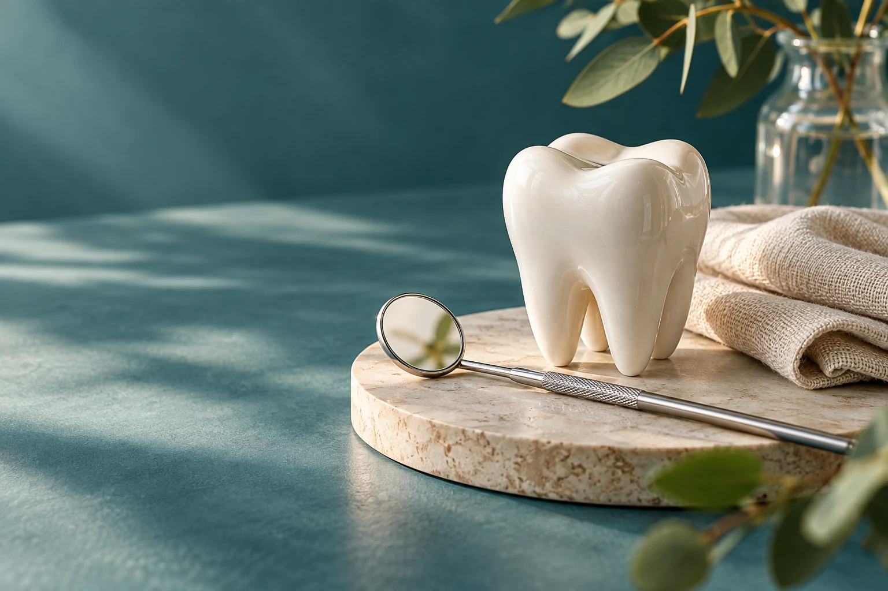

Tratamento de canal
Mencionado no nome da ficha. Pergunte quando uma avaliação é indicada e quais etapas podem se aplicar ao seu caso.
CITADO NO PERFILOdontologia · Belo Horizonte
As três frentes aparecem no nome público da ficha. Use o contato para entender indicação, etapas, valores e agenda antes de decidir.

03 · SOBRE O PROFISSIONAL
Consultório Odontológico Dra. Sarah Louzada · Salgado Filho, Belo Horizonte. A descrição comercial não estava disponível na ficha pública consultada.
A ficha identifica o Consultório Odontológico Dra. Sarah Louzada no bairro Salgado Filho e menciona tratamento de canal, ortodontia e implante dental no próprio nome. Como não há uma descrição comercial publicada, detalhes de formação, técnicas, condições de atendimento e indicações devem ser confirmados diretamente.
A ficha atual do Google mostra 5,0 estrelas em 81 avaliações. Temas agregados incluem competência (6) e simpatia (3); são assuntos de avaliações, não depoimentos reproduzidos.
04 · SERVIÇOS OFERECIDOS
O nome público cita as áreas abaixo. Indicação, procedimentos disponíveis, etapas e valores precisam ser conversados com a equipe.
Mencionado no nome da ficha. Pergunte quando uma avaliação é indicada e quais etapas podem se aplicar ao seu caso.
CITADO NO PERFILTambém citada no nome público. Confirme quais opções de avaliação e acompanhamento estão disponíveis.
CITADO NO PERFILA ficha menciona implante dental. Converse sobre avaliação individual, planejamento, prazos e custos.
CITADO NO PERFILUse o primeiro contato para explicar sua dúvida e saber qual consulta ou profissional pode orientar o próximo passo.
CONFIRMAR05 · DIFERENCIAIS
Dados de avaliação e atributos exibidos no Google Maps em 1º de outubro de 2026.
Canal, ortodontia e implante estão no nome público da ficha; confirme o escopo atual de cada uma.
Nota 5,0/5 em 81 avaliações na ficha consultada. Acesse o perfil para conferir a informação.
A ficha recomenda agendamento e informa banheiro e pagamento por cartão/NFC; confirme os detalhes ao ligar.
06 · COMO FUNCIONA
Sugestão informativa; confirme o processo real com o profissional.
Explique em poucas palavras se busca informação sobre canal, ortodontia, implante ou outra questão odontológica.
Pergunte disponibilidade, endereço, valores e se é necessário levar exames ou informações anteriores.
Indicação e plano dependem de avaliação odontológica individual e conversa com o profissional.
07 · REGIÃO DE ATENDIMENTO
Endereço conforme ficha pública do Google Maps. Confirme local e condições de atendimento antes de se deslocar.
R. Campo Formoso, 483 - Salgado Filho, Belo Horizonte - MG, 30550-360, BrasilAbrir ficha no Google Maps ↗08 · FAQ
O nome público menciona tratamento de canal, ortodontia e implante dental. Confirme quais serviços estão disponíveis atualmente.
Ligue e explique sua dúvida. A indicação depende da avaliação odontológica e do escopo confirmado pela equipe.
O perfil do Google recomenda agendamento. Confirme horários, valores e orientações pelo telefone antes de ir.
A ficha informa endereço no Salgado Filho, em Belo Horizonte. Consulte o mapa e confirme o local antes do deslocamento.
09 · CTA / CONTATO
Ligue para perguntar sobre canal, ortodontia, implante ou outra necessidade odontológica. Confirme agenda, valores e endereço diretamente com o consultório.